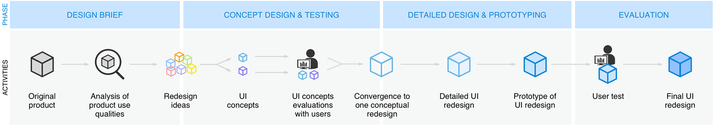
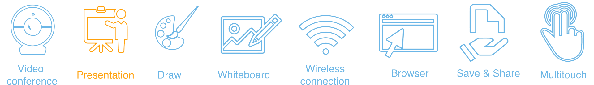

The Ominpresent Presenter
This project aimed to optimize the interaction and user experience of CTOUCH touchcreen through iterative cycles of usage evaluation and redesign. Our team (5 design students) worked well together by making big decision together and dividing the detailed work effectively. We redesigned the user interface concept and then fine tuned that concept until it is a high quality user interface.
Duration
- Feb, 2018 – Jun, 2018
Team
- Tim Smits, Tim van Dortmont
- Maria Ntourmetaki, Maira Ribelles
- Wenjun Zhou
Tools
- Axure, Figma, Sketch
- Indesign, Photoshop, Illustrator
Project Process
Design Theme
The interfaces we redesigned is for a huge touch screen from CTOUCH, a Dutch producer and wholesaler of touch sensitive interactive screens. Our team’s subject is to enhance effective presenting during a meeting for use in companies.
User Personas
To get a better view of the user, we created two personas detailing different aspects of the users who will use the product.
Usage Storyboard
The following storyboards had been developed to specify how the user interface changes in reaction to users’ actions in the different situations.
Connect your device wirelessly
Time spent - 02:00 minutes
Connect USB and find the document
Time spent - 00:45 minutes
Drawing on the screen
Time spent - relative
Take a screenshoot
Time spent - 00:15 minutes
Share slides or screenshoots
Time spent - 01:30 minutes
Usage Inspection
We conducted a usage inspection by comparing the product to a list of design principles. The problem were categorized by Nielsen’s Heuristics.
| Heuristic Evaluation | |
| Visibility of system status | Speak the user’s language |
| - no feedback when the usb is detected - no reaction on screen when laoding time is long - doesn't show internet connection status |
- double click cannot open the document in usb - lack of gestures to control slides |
| Error prevention | Help user recognize, diagnose and recover from errors |
| - “delete” and “close” on keyboard are close which leads to misoperation - no "undo" function in drawing mode |
- doesn’t tell the reason if it fails to load documents - nothing changes when “reload” is clicked |
| User control and freedom | Consistency and standards |
| - can only use the arrows in corner to go back to last slide in presentation - it is not possible to exit full screen during presentation - limited interactions with the screen leads to turning back to the laptop, which interrupts presentation - wireless disconnection can only be done on laptop |
- keyboard often doesn’t pop out automatically - long press on screen works as right click in wireless mode, which doesn’t work in pdf / brownser - scrolling works in Browser in ctouch system, which doesn’t work in PDF or wireless mode |
| Minimalist and aesthetic design | Help and documentation |
| - interferential but not working functions in pdf - message panel goes away itself very soon, but the “close” button tends to guide users to click it - redundant icons on keyboard - split keyboard is unnecessary on huge screen - background image doesn’t fit context - code indications look like error codes |
- doesn’t tell the reason if it fails to load a document - nothing changes when “reload” is clicked - hard to find usb port - no instruction where to open the usb file - no explanation what applications could be read from usb |
New Design Goal
Redesign Ideas
Preliminary Evaluation
Preliminary Concepts
First user test
We developed redesign ideas into two prototypes for the first evaluation session, then we continued to iterate our concepts based on insights from participants' feedback.
Convergence To One Concept
After the preliminary evaluation, we decided to make both concepts work as an entity, giving the user the choice of using the external device or not.
Sketch of Remote Control
With the Remote Control users will be able to draw and erase on screen directly, pass slides remotely and highlight parts of the presentation. The buttons are placed near the tip of the pen(red area), because users are more likely to point out with the ‘pointy’ part.
Interface Wireframe
User first have an overview of all the functions on the first menu and select one to enter the screen. Later the functions will be available on sidebar menu which can be opened on both sides.
Detailed UI Redesign
More details were further defined in our prototypes. The aesthetics kept simple in order to fit the business context. Considering the screen is huge, we used darker visual style to make it comfortable for eyes.
Remote Control - 3D Printed Prototype
Interfaces on screen
User Test
The user test was conducted at a studio prepared to immerse the participants into the intended context of use (A company meeting room). 10 participants took part in the evaluation session to test with prototypes of the resigned interface and the remote control.
Test Results
Sucessful Task Completion
The completion status with comments was recorded for each task and each participant.
Self-reported experience
Improvements
Based on the test results, we summarized a list of problem to fix and new elements that we want to add.
1. Gestures for passing slides
Add combined gestures: Tap to go to next slide
2. Help Page
Update gestures explanation; Add opened files explanation; Spotlight explanation; New features explanation
3. Sidebar Menu
Place “Opened files” icon separately in a higher position; Change icon -> add number of files opened;
Change the dot in side tab into a stripe to imply dragging instead of tapping
4. Instruction for inserting USB
Illustration showing place of USB port in USB screen; Delet "back" button; Darker background
5. Page overview in presentation mode
Add feature: Swipe up from the bottom to navigate through slides.
6. Exit button warning about exit
Add exit warning to avoid accidental exit and to inform that all the content created in that meeting will be deleted.